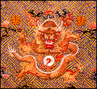

Wu Wei ordered everything from the temple except for one bowl of water to be removed. Stirring the water, he repeated magical words hundreds of times. Presently, a red finger-sized dragon appeared, raising its head slightly above the water's surface. Then it slowly disappeared. Wu wei stirred the water again, chanting a spell three times. From the bowl a white vapor rose several feet into the air and floated toward the temple door.
"Go," Wu Wei ordered the emperor's messenger, "for the rain is coming!" As he fled to alert the emperor, the messenger glanced back to see the vapor roll like white silk out of the temple. Then darkness fell, bringing with it thunder and rain. Gale winds uprooted giant trees along the road as the storm overtook the terrified messenger. At last he reached the emperor, drenched but safe.
Dragons
The Chinese dragon was a divine bringer of rain, necessary
for the good of all. The dragon was also a symbol of the good emperor whose wisdom and divine power assured the well-being
of his subjects. Many legends draw connections between the dragon and the
emperor. Some emperors even claimed to have descended from the dragon. For others, dragons were special
protectors.
Chinese dragons could make themselves as large as the universe or as small as a silkworm. They could also change color and disappear in a flash. Dragons were rarely seen because they cleverly hid in caves burrowed into the lofty mountains, or coiled up on the bottom of the deepest seas. Any sighting of a dragon boded well - it meant that Heaven was letting the people know that their ruler was doing a good job. Obviously, rulers were eager to hear of any reports of dragons in their domain.
Ch'ing Dynasty
In 1644, the nomadic Manchu (man-CHEW) warriors from
northern China overthrew China's Ming rulers and established the Ch'ing
dynasty. The Manchu admired and quickly adopted the culture and government of
the native Chinese they had conquered. Still, in their official clothing
styles, the Manchu emphasized their own distinctive cultural heritage.
Inspired by the riding garments of their nomadic days, Ch'ing robes had long
tapered sleeves, tight cuffs, narrow neck openings, side closures, and slit
skirts. Although the cut was new, Ch'ing robes were decorated with symbols
from traditional Chinese mythology, most notably the dragon.
Everyone who attended and served at court during the Ch'ing dynasty wore symbolic robes. Rank and status within the court were indicated by the cut, color, and symbolic decoration of one's robe. The highest rank was that of emperor, empress, or empress dowager. Only they were allowed to wear yellow robes bearing the five-toed dragon MOTIF (moe-TEEF).
Dragon Robe
This type of semiformal court robe is called
ch'i-fu (chee-foo), which translates as "festive
dress." The color and cut indicate that this robe was worn by an empress.

Description
The dragon on this robe (see detail) is a distinctive type
associated with the emperor. Its wide, flat head is topped by horns and
flanked by wiry whiskers. Scales and sharp spines cover its curving body.
Five short legs with powerful claws emerge from the dragon's snakelike torso.
Flames spark outward from its joints. The dragon tosses a flaming pearl
between its claws.
The dragon cavorts in a celestial landscape above a rainbow-hued diagonal
ocean whose frothy waves crash against three rocky mountains, all of which
represent the earth. The heavens are represented by a band of colorful
STYLIZED, stringy clouds that curl on top of the waves and float up in little
ovals through the robe.
Symbols
The dragon is the centerpiece of an elaborate set of images
that symbolize the emperor's authority as an intermediary in the universal
order between heaven and earth. The great and beneficial power of the dragon
could be brought to the people by the good governance of the emperor. The
pearl within the dragon's grasp is a symbol of wisdom. Like a worthy emperor,
the dragon always seeks wisdom.
Many symbols of good luck and power surround the dragon. The whole BACKGROUND is embroidered with an intricate PATTERN of connected bright blue swastikas. In China the swastika symbolized good luck and the number 10,000. Thus any symbol of blessing laid against it is multiplied 10,000 times. Several red bats fly through the heavens below the dragon. Bats were considered emblems of longevity and happiness because the words for happiness and bat sound similar. To either side of the dragon's head are red stylized shou (show) characters, which wish long life for the robe's wearer.
2. This dragon robe is covered with SYMBOLS that stand for the emperor's authority to mediate between heaven and earth. Find multicolored lines that represent "standing water." (Hem and sleeves of the robe.) Find frothy ocean waves. (Semicircles above the diagonal stripes.) Find three prism-shaped rock formations that symbolize mountains. (Above the ocean waves.) Find colorful stringy clouds that float throughout the robe. Find red bats that symbolize happiness. (The Chinese word for happiness and bat sound similar.) (Red bats fly through the sky below the central dragon.) Find the round red shou character, a symbol of long life. (Scattered throughout the area surrounding the dragons.) Find three pearls that symbolize wisdom. (White circles with red flames held by each of the three central dragons.) (See also THINK 1.)
3. Show detail of image 22. PATTERN can be made up of any repeated elements such as line, shape, or color. What pattern do you see on the BACKGROUND of this robe? (Bright blue connecting lines that make a background for other SYMBOLS.) Do these lines look familiar to you? (Point out the swastika in the pattern and explain that in traditional Chinese culture it symbolizes luck and the number 10,000.)
4. Show detail of image 22. What is this robe made of? (Fabric.) How are the symbols and patterns applied? (EMBROIDERY: the technique of sewing decorative designs on fabric with needle and thread.) How can you tell? (Thread creates tiny lines within each design, uneven edges of designs show where the thread has gone through the fabric.)
5. During the Chinese Ch'ing dynasty, everyone who attended and served at court wore special robes. Rank and status within the court were indicated by the cut, color, and SYMBOLIC decoration of these robes. The emperor, empress, and empress dowager wore yellow robes with five-clawed dragons. The crown prince wore apricot yellow, while the imperial princes wore blue or brown. Officials of the first through third ranks dressed in blue robes with nine dragons. Officials of the fourth through sixth ranks wore blue robes with eight four-clawed dragons. Who wore this dragon robe? (The emperor, empress, or empress dowager. The colors and the cut of this particular robe indicate that it was worn by the empress.)
2. All of the decorations on this robe were embroidered by hand. How long do you think it took to make this robe? (Years!)
3. The blue swastika pattern that makes up the background of this robe is symbolic of good luck and the number 10,000. Why do you think a symbol for 10,000 appears on the empress's robe? Explain that any symbol of blessing laid against the swastika is multiplied 10,000 times.
4. Chinese dragons were magical, mythical animals that could make themselves as large as the universe or as small as a silkworm. They could change color and disappear in a flash. Dragons were rarely seen because they hid in caves or at the bottom of the sea. Any sighting of a dragon foretold happiness and good fortune. Can you think of other magical, mythical characters who bring good luck and good fortune? (Leprechauns, fairies, elves, angels, a genie in a lamp.)